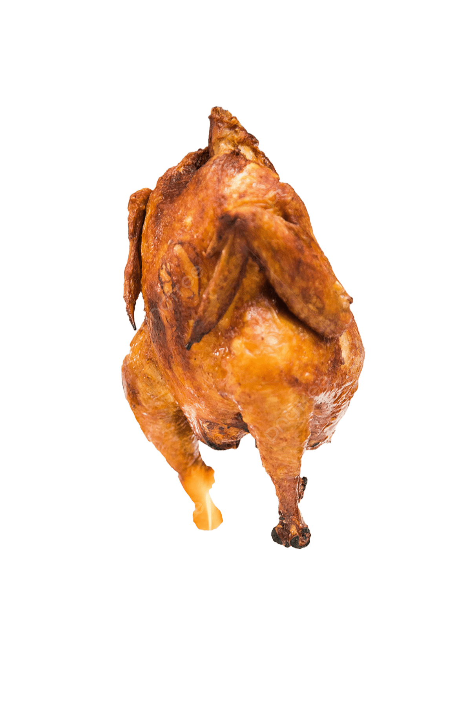

★ lista de misiones pendientes ★
PLANES
cosas que van a pasar (o no)
misiones completadas
0
/
9
estado
en progreso...
01
El bar de jazz
🎷
02
Anime con hotcakes y alcohol
🥞
03
Ex fábrica de harina
🏭
04
Leer los cómics de Scott Pilgrim
📖
05
Tatuaje
🖋️
06
El robo de 2 motocicletas del Elektra
🏍️
07
Querétaro 🤞
🗺️
08
Panecito de La Esperanza
❌ cancelado por hepatitis
🍞
09
Jugar un juego de Kirby
🎮